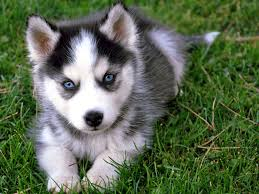

Malamutes
Here we are going to talk a little about Alaskan Malamutes!
We will talk about temperment, history and if a Malamute is a good fit for you and your family!

 vs
vs
Although these two dogs look very similar they are very different in terms of temperament, intelligence and energy!
Here we are going to talk a little about Alaskan Malamutes!
We will talk about temperment, history and if a Malamute is a good fit for you and your family!
Now we can talk a little about the Siberian Husky!We will talk about temperment, history and if a Husky is a good fit for you and your family!
